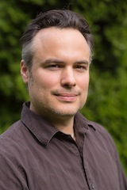

|

|
Alexander Kain (kaina@ohsu.edu)Computer Science & Electrical Engineering
(CSEE)
|
Oregon
Health & Science University, Portland, OR
Associate
Professor, 2014-present
Assistant Professor, 2007-2014
Senior
Research Associate, 2005-2007
BioSpeech,
Inc., Portland, OR
Chief Scientist, 2005-present
Sensory,
Inc., Santa Clara, CA
Lead Speech Synthesis Technologist,
2001-2008
AT&T
Research Labs, Florham Park, NJ
Visiting Researcher, 1999
Reviewer / Guest Editor for: Journal of the Acoustical Society of America (JASA); Computer, Speech, and Language; Journal of Speech, Language, and Hearing Research (JSLHR); IEEE Journals; scientific conferences such as Interspeech; National Science Foundation (NSF) proposals.
OGI
School of Science & Engineering, Portland, OR
Postdoctoral
Training, 2002-2005
Oregon
Graduate Institute, Portland, OR
Ph.D. in Computer Science
and Engineering, 2001
Rockford College,
Rockford, IL
Double B.A. in Computer Science & Mathematics,
1995
2015/09/01-2020/08/31 National Institutes of Health 2R01DC004689-11A1, "Therapeutic Approaches to Dysarthria: Acoustic and Perceptual Correlates", PI: Tjaden (U at Buffalo). To address incomplete knowledge of the comparative merits of dysarthria therapy techniques by comparing the acoustic and perceptual consequences of rate reduction, increased vocal intensity and clear speech variants in MS and PD.
2014/09/01-2017/08/31: National Institutes of Health 1R43MH101978-01A1, "System for automatic classification of rodent vocalizations", PI: Lahvis (BioSpeech). Development of treatments for neuropsychiatric disorders presents a formidable challenge. To advance drug discovery, assessments of laboratory rodents are widely employed by academia and industry to model neuropsychiatric disorders. Substantial recent advances in digital recordings of rodent ultrasonic vocalizations (USVs) have engendered interest in assessment of USVs to measure behavior change. A practical obstacle to USV assessment is that they are classified manually. We propose a software system that allows a user to rapidly interrogate recordings of rodent USVs for prosodic content.
2010/09/27-2016/09/30: National Science Foundation BCS-1027834, "Computational Models for the Automatic Recognition of Non-Human Primate Social Behaviors", PI: Kain (OHSU). To develop methods that will permit researchers to remotely and automatically monitor behavior of primates and other highly social animals.
2013/09/15-2016/02/28: National Institutes of Health 1R43DA037588-01A1, "Screening for Sleep Disordered Breathing with Minimally Obtrusive Sensors", PI: Snider (BioSpeech). To create a portable, low-cost, and minimally obtrusive system for automatically detecting sleep-disordered breathing, such as cessation of breathing (apnea).
2011/12/01-2015/08/31: National Institute of Health R21DC012139, "Computer-Based Pronunciation Analysis for Children with Speech Sound Disorders", PI: Kain (OHSU). The aim is to develop speech-production assessment and pronunciation training tools for children with speech sound disorders.
2010/05/15-2015/04/30: National Science Foundation IIS-0964468, "HCC: Medium: Synthesis and Perception of Speaker Identity", PI: Kain (OHSU). To achieve the goal of synthesis of speaker identity from a small training corpus the project will address problems including trainable abstract parameterizations of the prosodic patterns that characterize a speaker and voice conversion methods.
2012/04/01-2015/03/31: National Institute of Health 5R44DC009515-03, "SBIR Phase II: Computer-based auditory skill building program for aural (re)habilitation", PI: Connors (BioSpeech). To extend an adaptive computer-guided software program (the Speech Identification Tutor, SIT) that focuses on learning phoneme discrimination and identification.
2010/06/09-2014/08/31: National Science Foundation IIS-0964102, "Semi-Supervised Discriminative Training of Language Models", PI: Kain (OHSU). To conduct fundamental research in statistical language modeling to improve human language technologies, including automatic speech recognition (ASR) and machine translation (MT).
2011/04/01-2012/03/31: National Institute of Health 5R42DC008712, "User Adaptation of AAC Device Voices - Phase 2", PI: Klabbers (BioSpeech). Developing and evaluating voice transformation and prosody modification technologies to customize synthetic voices in AAC devices, mimicking the individual user's pre-morbid speech.
2011/03/01-2013/03/31: National Institute of Health 1R43DC011706-01, "SBIR Phase I: Computerized System for Phonemic Awareness Intervention", PI: Connors (BioSpeech). This grant aims to develop and evaluate a play-and-drag-and-drop audio-visual interface for analyzing and sequencing phonemes in words to help children build the phonemic and phonological awareness foundational skills necessary for literacy.
2009/09/01-2013/08/31: National Science Foundation IIS-0915754, "RI: Small: Modeling Coarticulation for Automatic Speech Recognition", PI: Kain (OHSU). Performing automatic speech recognition (ASR) using the Asynchronous Interpolation Model (AIM) framework. By decomposing the input speech signal into basis vectors and weights, we search for phonemic basis vectors and weights that yield the highest-probability match to the input signal.
2009/07/15-2012/06/30: National Science Foundation IIS-0905095, "HCC: Automatic detection of atypical patterns in cross-modal affect", PI: van Santen (OHSU). The long term goal is to build interactive, agent based systems for (1) remediation of poor affect communication and (2) diagnosis of the underlying neurological disorders based on analysis of affective signals.
2009/07/17-2012/06/30: National Institute of Health 5R21DC010035, "Quantitative Modeling of Segmental Timing in Dysarthria", PI: van Santen (OHSU). The project seeks to apply a quantitative modeling framework to segment durations in sentences produced by speakers with a variety of neurological diagnoses and dysarthrias.
2008-2009: Nancy Lurie Marks Family Foundation, "In Your Own Voice: Personal AAC Voices for Minimally Verbal Children with Autism Spectrum Disorder", PI: van Santen (OHSU). Adapted a text-to-speech voice to sound like a child's voice.
2007/09/01-2011/08/31: National Science Foundation IIS-0713617, "HCC: High-quality Compression, Enhancement, and Personalization of Text-to-Speech Voices", PI: Kain (OHSU). Developed Text-to-Speech technologies that focus on elimination of concatenation errors, and accurate speech modifications in the areas of coarticulation, degree of articulation, prosodic effects, and speaker characteristics, using an asynchronous interpolation model.
2007/01/01-2008/06/30: National Institute of Health 1R41DC008712, "User Adaptation of AAC Device Voices - Phase 1", PI: van Santen (BioSpeech). Developed and evaluated voice transformation and prosody modification technologies to customize synthetic voices in AAC devices, mimicking the individual user's pre-morbid speech.
2006/09/01-2008/03/31: National Institute of Health 1R41DC007240, "Voice Transformation for Dysarthria - Phase 1", PI: van Santen (BioSpeech). Developed software that transforms speech compromised by dysarthria into easier-to understand and more natural-sounding speech. The software resides on a wearable computer, with headset microphone input and powered speaker or line output.
2005/01/10-2010/12/31: National Institute of Health 5R01DC007129, "Expressive crossmodal affect integration in Autism", PI: van Santen (OHSU). This study performed a comprehensive analysis of crossmodal integration of affect expression in ASD.
2005/01/01-2006/06/30: National Science Foundation IIP-0441125, "STTR Phase 1: Small Footprint Speech Synthesis", PI: Kain (BioSpeech). Created and evaluated speech compression technologies for concatenative text-to-speech synthesizers.
2001/10/01-2005/09/30: National Science Foundation IIS-0117911, "Making Dysarthric Speech Intelligible", PI: van Santen (OHSU). Developed new algorithms that enable dysarthric individuals to be more easily understood by the general population.
Credits: 3
This course represents a best-of compilation of
concepts, practices, and R- and python-based software libraries (all
free, open-source, and unrestricted) that allow for a relatively
rapid, straight-forward, and easy-to-maintain implementation of new
ideas and scientific questions. Students will gain awareness and
initial working knowledge of some of the most fundamental
computational tools for performing a wide variety of academic
research. As such, it will focus on providing breadth instead of
depth, which means that for each concept we will talk about
motivation, key concepts, and concrete usage scenarios, but without
mathematical background or proofs, which can be acquired in more
specialized classes. In this class we will: use R for data
exploration and visualization, write programs in python, perform
numeric tasks using numpy and scipy, analyze data using pandas,
discuss audio and image processing using scipy.signal and
scikit-image, apply machine learning algorithms using scikit-learn,
visualize data using matplotlib and pyqtgraph, use QT to build
graphical user interfaces, learn how to version control files with
git, address performance issues via
compilation/profiling/parallelization tools, and much more.
Credits: 3
Speech systems are becoming commonplace in today's
computer systems and Augmentative and Alternative Communication (AAC)
devices. Examples are speech recognition systems and Text-to-Speech
synthesis systems. This course will introduce the fundamentals of the
underlying speech signal processing that enables such systems. Topics
include speech production and perception by humans, frequency
transforms, filters, linear predictive features, pitch estimation,
speech coding, speech enhancement, and prosodic speech modification.
Credits: 3
This course will introduce students to the problem
of synthesizing speech from text input. Speech synthesis is a
challenging area that draws on expertise from a diverse set of
scientific fields, including signal processing, linguistics,
psychology, statistics, and artificial intelligence. Fundamental
advances in each of these areas will be needed to achieve truly
human-like synthesis quality and advances in other realms of speech
technology (like speech recognition, speech coding, speech
enhancement). In this course, we will consider current approaches to
sub-problems such as text analysis, pronunciation, linguistic
analysis of prosody, and generation of the speech waveform. Lectures,
demonstrations, and readings of relevant literature in the area will
be supplemented by student lab exercises using hands-on tools.
Credits: 3
This course covers a range of speech and language
analysis algorithms that have been developed for measurement of
speech or language based markers of neurological disorders, for the
creation of assistive devices, and for remedial applications. Topics
will include introduction to speech and language disorders, robust
speech signal processing, statistical approaches to pitch and timing
modeling, voice transformation algorithms, speech segmentation, and
modeling of disfluency. The class will use a wide array of clinical
data, and will be closely tied to several ongoing research projects.
Speech Intelligibility is the degree to which listeners can understand a speech signal's message. Historically, the specific acoustic sources of intelligibility are poorly understood, and automatic approaches to modify the degree of intelligibility were limited. We invented a hybridization approach that allows for precisely measuring the degree of contribution of one or more acoustic features to speech intelligibility. We applied this approach to find the most relevant acoustic features that cause the intelligibility improvement in clearly-spoken typical and dysarthric speech. This allows a principled study of different remedial strategies. We also created algorithms that automatically improve the intelligibility of dysarthric or conversational speech signals, using approaches from speech analysis, machine learning, and speech synthesis. These algorithms may be instrumental for next-generation hearing- and speaking-aids.
K. Tjaden, A. Kain, J. Lam, "Hybridizing Conversational and Clear Speech to Investigate the Source of Increased Intelligibility in Parkinson's Disease", Journal of Speech, Language, and Hearing Research, Volume 57, August 2014. (Video)
S. Mohammadi, A. Kain, J. van Santen, "Making Conversational Vowels More Clear", Proceedings of Interspeech, 2012.
A. Kain and J. van Santen, "Frequency-domain delexicalization using surrogate vowels", Interspeech, 2010.
A. Kain, J. van Santen, "Using Speech Transformation to Increase Speech Intelligibility for the Hearing- and Speaking-impaired", Proceedings of ICASSP, April 2009.
A. Kain, A. Amano-Kusumoto, and J.-P. Hosom, "Hybridizing Conversational and Clear Speech to Determine the Degree of Contribution of Acoustic Features to Intelligibility", Journal of the Acoustical Society of America, Volume 124, Issue 4, October 2008, pages 2308-2319.
A. Kusumoto, A. Kain, P. Hosom, and J. van Santen, "Hybridizing Conversational and Clear Speech", Proceedings of Interspeech, August 2007.
A. Kain, J. Hosom, X. Niu, J. van Santen, M. Fried-Oken, J. Staehely, "Improving the Intelligibility of Dysarthric Speech", Speech Communication, Volume 49, Issue 9, September 2007, Pages 743-759.
X. Niu, A. Kain, J. van Santen, "A Noninvasive, Low-cost Device to Study the Velopharyngeal Port During Speech and Some Preliminary Results", Proceedings of Interspeech, September 2006.
X. Niu, A. Kain, J. van Santen, "Estimation of the Acoustic Properties of the Nasal Tract during the Production of Nasalized Vowels", Proceedings of EUROSPEECH, September 2005.
A. Kain, X. Niu, J. Hosom, Q. Miao, J. van Santen, "Formant Re-synthesis of Dysarthric Speech", Proceedings of 5th ISCA Workshop on Speech Synthesis, June 2004.
J. Hosom, A. Kain, T. Mishra, J. van Santen, M. Fried-Oken, J. Staehely, "Intelligibility of modifications to dysarthric speech", Proceedings of ICASSP, May 2003.
Text-to-Speech (TTS) Synthesis is the process of generating human speech artificially from textual input. Although TTS systems are becoming more and more commonplace, many challenges remain to produce natural-sounding, meaningful output. We have created algorithms that significantly reduce audible artifacts in the synthesis output, that improve the naturalness of the intonation contour, and that allow remarkable data compression of acoustic inventories.
M. Langarani, J. van Santen, S. Mohammadi, A. Kain, "Data-driven Foot-based Intonation Generator for Text-to-Speech Synthesis", Interspeech, 2015.
A. Kain and T. Leen, "Compression of Line Spectral Frequency Parameters using the Asynchronous Interpolation Model", 7th ISCA Workshop on Speech Synthesis, September 2010.
Q. Miao, A. Kain, J. van Santen, "Perceptual Cost Function for Cross-fading Based Concatenation", Interspeech, 2009.
R. Moldover, A. Kain, "Compression of Line Spectral Frequency Parameters with Asynchronous Interpolation", ICASSP, April 2009.
A. Kain, Q. Miao, J. van Santen, "Spectral Control in Concatenative Speech Synthesis", 6th ISCA Workshop on Speech Synthesis, August 2007.
A. Kain and J. van Santen, "Unit-Selection Text-to-Speech Synthesis Using an Asynchronous Interpolation Model", 6th ISCA Workshop on Speech Synthesis, August 2007.
E. Klabbers, J. van Santen, A. Kain, "The Contribution of Various Sources of Spectral Mismatch to Audible Discontinuities in a Diphone Database", IEEE Transactions on Audio, Speech, and Language Processing Journal, Volume 15, Issue 3, Pages 949-956, March 2007.
J. van Santen, A. Kain, E. Klabbers, and T. Mishra, "Synthesis of Prosody using Multi-level Unit Sequences", Speech Communication Journal, Volume 46, Issues 3-4, Pages 365-375, July 2005.
J. van Santen, A. Kain, and E. Klabbers, "Synthesis by Recombination of Segmental and Prosodic Information", Speech Prosody 2004, March 2004.
A. Kain and J. van Santen, "A speech model of acoustic inventories based on asynchronous interpolation", EUROSPEECH, Pages 329-332, August 2003.
J. van Santen, L. Black, G. Cohen, A. Kain, E. Klabbers, T. Mishra, J. de Villiers, X. Niu, "Applications of computer generated expressive speech for communication disorders", EUROSPEECH, Pages 1657-1660, August 2003.
A. Kain and J. van Santen, "Compression of Acoustic Inventories using Asynchronous Interpolation", IEEE Workshop on Speech Synthesis, Pages 83-86, September 2002.
J. van Santen, J. Wouters, and A. Kain, "Modification of Speech: A Tribute to Mike Macon", IEEE Workshop on Speech Synthesis, September 2002.
A. Kain and Y. Stylianou, "Stochastic Modeling of Spectral Adjustment for High Quality Pitch Modification", ICASSP, June 2000, vol. 2, pp. 949-952.
Voice Conversion modifies a source speaker's utterance to sound as if a target speaker had spoken it. Its uses include entertainment and security applications, and, most importantly, adaptation of text-to-speech systems' voices to new speakers, especially benefitting individuals who depend on speech-generating devices for communication. Despite continuous research in the field, speech quality and mimic accuracy is still insufficient for everyday usage. We have advanced the state of the art by researching novel approaches, including the use of joint-density Gaussian mixture models and semi-supervised learning with deep autoencoders and deep neural networks.
S. Mohammadi, A. Kain, “An Overview of Voice Conversion Systems”, SPECOM, 2017.
S. Mohammadi, A. Kain, "A Voice Conversion Mapping Function based on a Stacked Joint-Autoencoder", Interspeech, 2016.
S. Mohammadi, A. Kain, "Semi-supervised Training of a Voice Conversion Mapping Function using a Joint-Autoencoder", Interspeech, 2015.
S. Mohammadi, A. Kain, "Voice conversion using Deep Neural Networks with speaker-independent pre-training", IEEE Spoken Language Technology Workshop (SLT), 2014.
S. Mohammadi, A. Kain, "Transmutative Voice Conversion", ICASSP, 2013.
E. Morley, E. Klabbers, J. van Santen, A. Kain, S. Mohammadi, "Synthetic F0 can Effectively Convey Speaker ID in Delexicalized Speech", Interspeech, 2012.
E. Morley, J. van Santen, E. Klabbers, A. Kain, "F0 Range and Peak Alignment across Speakers and Emotions", ICASSP, 2011.
E. Klabbers, A. Kain, and J. van Santen, "Evaluation of speaker mimic technology for personalizing SGD voices", Interspeech, 2010.
H. Duxans, A. Bonafonte, A. Kain, and J. van Santen, "Including Dynamic and Phonetic Information in Voice Conversion Systems", ICSLP, October 2004.
A. Kain, "High Resolution Voice Transformation", Ph.D. thesis, OGI School of Science & Engineering at Oregon Health & Science University, 2001. The data used in this thesis are available from the Linguistic Data Consortium as the VOICES Corpus.
A. Kain and M. Macon, "Design and Evaluation of a Voice Conversion Algorithm based on Spectral Envelope Mapping and Residual Prediction", ICASSP, May 2001.
A. Kain and M. Macon, "Personalizing a speech synthesizer by voice adaptation", 3rd ESCA/COCOSDA International Speech Synthesis Workshop, November 1998, pp. 225-230.
A. Kain and M. Macon, "Text-to-speech voice adaptation from sparse training data", ICSLP, November 1998, vol.7, pp. 2847-50.
A. Kain and M. Macon, "Spectral Voice Conversion for Text-to-Speech Synthesis", ICASSP, May 1998, vol. 1, pp. 285-288.
Coarticulation refers to the phenomenon in which a conceptually isolated speech sound becomes more similar to a preceding or following speech sound. Modeling coarticulation in speech has been largely limited to short sequences and/or limited phonetic context. We introduce a methodology for modeling both formant frequencies and bandwidth in continuous speech. Applications of such a model include improved formant tracking, characterization of conversational vs. clear speech, and detection of typical vs. disordered speech.
B. Bush, A. Kain, "Modeling Coarticulation in Continuous Speech", Interspeech 2014.
A. Amano-Kusumoto, J.-P Hosom, A. Kain, J. Aronoff, "Determining the relevance of different aspects of formant contours to intelligibility", Speech Communication, Volume 59, April 2014.
B. Bush, A. Kain, "Estimating Phoneme Formant Targets and Coarticulation Parameters of Conversational and Clear Speech", ICASSP, 2013.
B. Bush, J.-P. Hosom, A. Kain, and A. Amano-Kusumoto, "Using a genetic algorithm to estimate parameters of a coarticulation model", Interspeech, 2011.
A. Amano-Kusumoto, J.-P. Hosom, and A. Kain, "Speaking style dependency of formant targets", Interspeech, 2010.
B. Snider and A. Kain, "Classification of Respiratory Effort and Disordered Breathing during Sleep from Audio and Pulse Oximetry Signals", ICASSP, 2016.
B. Snider and A. Kain, "Automatic Classification of Breathing Sounds during Sleep", ICASSP, 2013.
S. Dudy, M. Asgari, and A. Kain, "Pronunciation Analysis for Children with Speech Sound Disorders", IEEE Engineering in Medicine and Biology society (EMBC), Milan, 2015. (PMC4710861)
J. House, A. Kain, and J. Hines, "ESP - Metaphor for learning: an evolutionary algorithm", GECCO 2000, Las Vegas, NV.
S. Sutton, R. Cole, J. de Villiers, J. Schalkwyk, P. Vermeulen, M. Macon, Y. Yan, E. Kaiser, B. Rundle, K. Shobaki, P. Hosom, A. Kain, J. Wouters, D. Massaro, M. Cohen, "Universal Speech Tools: The CSLU Toolkit", ICSLP, November 1998, vol. 7, pp. 3221-24.
N. Malayath, H. Hermansky, A. Kain and R. Carlson, "Speaker-independent Feature Extraction by Oriented Principal Component Analysis", EUROSPEECH, 1997.
A. Kain, "Speech transformation: Increasing intelligibility and changing speakers", Journal of the Acoustical Society of America, 126(4):2205 (2009).
J.P. Hosom, A. Kain, and B. Bush, "Towards the recovery of targets from coarticulated speech for automatic speech recognition", The Journal of the Acoustical Society of America, 130(4), pages 2407-2407, 2011.
J. van Santen and A. Kain, OHSU. System and Method for Compressing Concatenative Acoustic Inventories for Speech Synthesis.
A. Kain and Y. Stylianou, AT&T Research Laboratories. Stochastic Modeling Of Spectral Adjustment For High Quality Pitch Modification.
B. R. Snider and A. Kain, "Adaptive Reduction of Additive Noise from Sleep Breathing Sounds", CSLU-2012-001.
A. Kain, J.-P. Hosom, S. H. Ferguson, B. Bush, "Creating a speech corpus with semi-spontaneous, parallel conversational and clear speech", CSLU-11-003.
A. Amano-Kusumoto and J.-P. Hosom, "A review of research on speech intelligibility and correlations with acoustic features", CSLU-11-001.
Quantitative assessment and transformation of clear and conversational speech, with the aim of advancing hearing-aid performance (without extra noise: conversational, clear prosody and conversational spectrum, conversational prosody and clear spectrum, clear; with multi-talker background noise: conversational, clear prosody and conversational spectrum, conversational prosody and clear spectrum, clear)
Transformation of aphonic speech to improve intelligibility and acceptability ( aphonic speech, transformation)
Transformation of dysarthric speech to improve intelligibility and perceived voice quality ( dysarthric speech, transformation)
Increasing spectral control in concatenative synthesizers to eliminate concatenation errors (baseline, formant + spectral-band + time-domain crossfading)
Representing acoustic inventories of Text-to-Speech systems with an asynchronous interpolation model, allowing high rates of compression, elimination of concatenation errors, and speaker transformation (compression: original, compression with AIM coder @ 3.4kbps, compression with speex coder @ 3.4kbps for comparison; speaker transformation: transformation-1, transformation-2, transformation-3, transformation-4, transformation-5)
Improving the accuracy and quality of speaker transformation systems and designing speaker recognizability perceptual tests (transformation of natural speech: source, transformation, target; transformation of TTS synthesis voices: source, transformation, target)
Multi-purpose speech modification algorithms (original, resynthesis, slow to 300%, speed-up to 50%, lower pitch to 50%, raise pitch to 200%, scale formants to 80%, scale formants to 120%, mimic child, mimic man)
Singing synthesis 1999 ("The Search is Over")